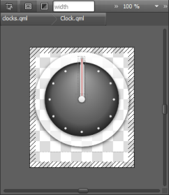

Creating Components
A component provides a way of defining a new visual item that you can re-use in other QML files. A component is like a black box; it interacts with the outside world through properties, signals, and slots, and is generally defined in its own QML file. You can import components to screens and applications.
You can use the following QML types to create components:
- Border Image uses an image as a border or background.
- Image adds a bitmap to the scene. You can stretch and tile images.
- Item is the most basic of all visual types in QML. Even though it has no visual appearance, it defines all the properties that are common across visual types, such as the x and y position, width and height, anchoring, and key handling.
- Rectangle adds a rectangle that is painted with a solid fill color and an optional border. You can also use the radius property to create rounded rectangles.
- Text adds formatted read-only text.
- Text Edit adds a single line of editable formatted text that can be validated.
- Text Input adds a single line of editable plain text that can be validated.
Using Qt Quick Controls
In Qt 4, ready-made Qt Quick 1 Components were provided for creating screens with a native look and feel for a particular target platform. In Qt 5.1, Qt Quick Controls, Dialogs, and Layouts were added for creating classic desktop-style user interfaces using Qt Quick 2.1. The Qt Quick Controls Styles could be used to customize Qt Quick Controls.
Since Qt 5.7, Qt Quick Controls 2 replace Qt Quick Controls 1 and Qt Labs Controls. They provide lightweight QML types for creating performant user interfaces for devices.
Qt Quick Controls 2 achieve improved efficiency by employing a simplified styling architecture when compared to Qt Quick Controls, on which the module is based. Qt Quick Designer reads the qtquickcontrols2.conf file that specifies the preferred style and some style-specific arguments. To change the style, select another style from the list on the toolbar. This enables you to check how your UI looks when using the available styles.
For an example of defining your own style and using it in Qt Quick Designer, see Qt Quick Controls 2 - Flat Style.
Qt Quick Controls 2 work in conjunction with Qt Quick and Qt Quick Layouts.
The Qt Creator project wizards create Qt Quick applications that use Qt Quick 2 types or Qt Quick Controls 2 types.
Even if you use Qt Quick Controls 2, you can still write cross-platform applications, by using different sets of QML files for each platform.
Some ready-made controls, such as a gauge, dial, status indicator, and tumbler, are provided by the Qt Quick Extras module.
Creating Components in Qt Quick Designer
- Select File > New File or Project > Files and Classes > Qt > QML File (Qt Quick 2) > Choose to create a new .qml file.
Note: Components are listed in the QML Components section of the Library only if the filename begins with a capital letter.
- Click Design to open the .qml file in Qt Quick Designer.
- Drag and drop a QML type from the Library to the Navigator or Form Editor.
- Edit its properties in the Properties pane.
The available properties depend on the QML type.
The following sections contain examples of how to create some common components:
Moving Within Components
Components can consist of several other components. To view the component hierarchy as a bread crumb path when you edit a component on the canvas, select Go into Component or press F2. Click the component names in the path to navigate to them. You can easily navigate back to the top level when you are done editing the component.
